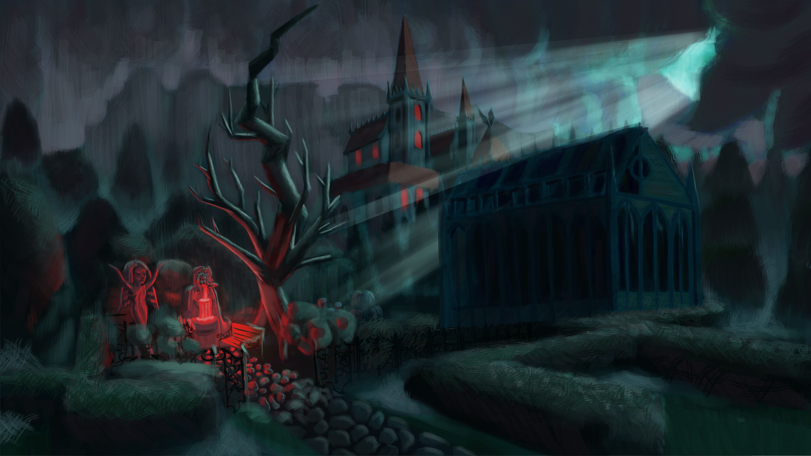

Главный герой ухаживает за растениями в саду в вампирском поместье, пытаясь выкрасть ценную статуэтку, для чего ему нужно углубляться в исследовании сада и налаживать отношения с обитателями поместья.


Главный герой ухаживает за растениями в саду в вампирском поместье, пытаясь выкрасть ценную статуэтку, для чего ему нужно углубляться в исследовании сада и налаживать отношения с обитателями поместья.
От основателя проекта, Оли
Концепты рабочих инструментов садовника, хотела передать через них историю. Идея в том что инструменты сделаны из оружия, показывая что раньше вампиры были полностью вовлечены в битвы
От основателя проекта, Оли
Как и обещала, выпускаю пост с тем, как сейчас выглядит диалоговая система с первым нпс, который даст вводную информацию. Сейчас меня пугает количество текста, та как понятно, что люди не любят много читать, особенно в самом начале игры, и надо как-то балансировать с подачей нужной информацией и тем, что бы текст не был нудным. В карусели вы можете увидеть, что нпс отвечает на первый вопрос, а если прокрутить дальше, увидите, как сейчас выглядит дерево ответов
Будучи вором, он никогда не имел опыта ухода за садом, что нарративно позволяет вводить игрока в принципы работы игровых механик через восприятие протагониста. Прошлое персонажа не играет существенной роли в сюжете, что позволяет играть им, без учёта его психологических особенностей, как «чистым листом», т.е. самостоятельно формировать принципы поведения в заданных границах. Основной мотивацией к действию для протагониста является желание выжить.
Граф бывший военный, офицер и дворянин, мастер меча, потерявший былые боевой пыл и азарт после гибели на войне своей жены. В виду скорби о ней, он оберегает любимый ею сад. Неконфликтен, однако может в критической ситуации прибегнуть к насилию. Скован в движениях из-за ранения в былых битвах. Людей недолюбливает, но так как является пацифистом, и не поддерживает расовые распри, старается ко всем относиться одинаково.
Конюх Один из работников графа, имеет телепатия (передавать информацию силой мысли), позитивный, любит сплетничать и много болтать. Доброжелательно относится к протагонисту.